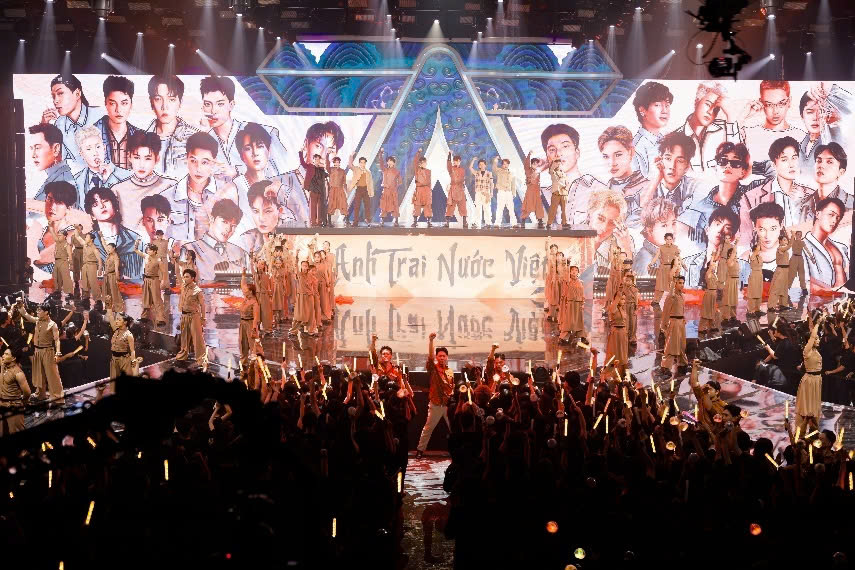

Tin nổi bật
'Anh trai say hi' - âm nhặc hòa quyện yếu tố thực tế
Các gameshow lập đội, giành quyền demo bài hát và những cuộc trò chuyện giúp dàn thí sinh "Anh trai say hi" khơi cảm hứng sáng tác, trình diễn.
Một show nhạc thực tế thường kết hợp phần âm nhạc và thực tế (reality). Tỷ lệ giữa hai yếu tố này phụ thuộc vào mục tiêu chương trình. Với reality, khán giả Anh trai say hi sẽ theo dõi câu chuyện, cảm xúc, quá trình luyện tập, sáng tác của 30 nghệ sĩ khi làm việc với đội ngũ producer, nhạc sĩ, biên đạo. Phần này chiếm 30-60% thời lượng trong các tập có tiết mục trình diễn.
Với những tập không thi hát, 100% nội dung là chơi game lập đội, giành quyền chọn demo bài hát. Yếu tố thực tế được xem là tiền đề cho cảm hứng sáng tác, trình diễn của dàn ca sĩ.

Trong tập 10, Quân A.P và nhóm không có sở trường sản xuất nhạc gồm Ali Hoàng Dương, Quang Trung, Pháp Kiều lần lượt vượt thử thách từ lúc lập đội đến khi kết thúc màn trình diễn Regret. Nỗ lực của họ góp phần giúp tiết mục này tạo sức hút trên các diễn đàn, dẫn đầu top thịnh hành YouTube.
Với yêu cầu sáng tác ca khúc về mẹ, các "anh trai" dành nhiều thời gian trò chuyện. Atus, Song Luân cho biết khó giãi bày tình yêu với người thân, đến giờ vẫn ngượng không thể nói câu "Con yêu mẹ". Anh Tú từng gặp vấn đề giống Song Luân, nhưng ba năm gần đây, anh học cách làm bạn với cha mẹ, siêng thăm hỏi, tâm sự chuyện riêng tư.
Trong khi đó, Quang Trung hoài niệm món ngon mẹ nấu, khiến nhóm bật cười với ước mơ ngây ngô thời nhỏ - mong mẹ bán phá lấu trước cổng trường để được ăn thỏa thích. Từ cảm xúc thật của cả nhóm, Dương Domic viết ca khúc Bao lời con chưa nói.
Trong công diễn 4, khách mời - NSND Kim Xuân - mở màn với lời ru bên chiếc nôi: "Ví dầu cầu ván đóng đinh/ Cầu tre lắt lẻo gập ghềnh khó đi...", tiếp đó là màn hòa giọng của cả nhóm: "Ngàn lời cảm ơn, ngàn lời xin lỗi. Xin ngàn lần thứ tha, xin được nói con yêu mẹ". Lên sóng đúng dịp Vu Lan, tiết mục tạo đồng cảm. NSND Kim Xuân gọi tên, cảm ơn từng "anh trai", nhất là Đăng Dương (Dương Domic) - người viết ca từ Bao lời con chưa nói.
Theo nhà sản xuất, môi trường cạnh tranh lành mạnh, sự tương tác, tinh thần đồng đội thúc đẩy các "anh trai". Qua mỗi thử thách ở từng công diễn, dàn nghệ sĩ có thể tìm ra phong cách âm nhạc mới hoặc kết hợp nhiều thể loại, từ đó sáng tạo sản phẩm độc đáo, hút khán giả nhất.
Sau màn "bắn rap" ở tiết mục Regret, Quân A.P ra MV mới, tự tin thể hiện khả năng rap - yếu tố chưa từng xuất hiện trong sản phẩm của anh trước đó. Chia tay sau công diễn 3, Lou Hoàng cho biết anh hạnh phúc vì có cơ hội hòa mình vào tập thể đoàn kết, nhiều năng lượng tích cực. "Hy vọng mọi người sẽ cố gắng luôn phần của tôi, đưa nhạc Việt ra thế giới", Lou Hoàng nói.
Hòa vào xu thế toàn cầu, chương trình Anh trai say hi vừa chú trọng đổi mới từ bên trong, vừa học hỏi từ mô hình nhóm nhạc của Hàn Quốc, Trung Quốc. Đội hình trình diễn theo định hướng kiểu mẫu gồm: leader (trưởng nhóm), vocal (giọng ca chính), rap, dance (nhảy) và visual (gương mặt đại diện).
Thay vì chọn lối đi an toàn - tái sử dụng hit quen thuộc khán giả, ban tổ chức Anh trai say hi lại đưa ra "đề thi" khó: sản xuất toàn bộ ca khúc mới và dàn "anh trai" cùng sáng tác, tự lên concept trình diễn. 30 nghệ sĩ trẻ, 20 nhạc sĩ, nhà sản xuất và 50 bài hát góp phần "thổi" vào thị trường âm nhạc luồng gió mới, đầy năng lượng.
Trên các diễn đàn, nhiều khán giả nhận định mỗi tiết mục ghi dấu nỗ lực của cả tập thể - từ nhạc sĩ, đội ngũ sản xuất âm nhạc, biên đạo đến dàn dựng sân khấu. Không chỉ biểu diễn, thí sinh còn đảm nhận vai trò sáng tạo, quyết định phong cách trình diễn sao cho phù hợp cá tính, câu chuyện họ muốn gửi gắm khán giả.
Bên cạnh đó, êkíp cho đặt mục tiêu hỗ trợ nghệ sĩ trẻ tìm kiếm cơ hội tỏa sáng. Thế hệ gen Z như Hải Đăng Doo, Captain, Dương Domic, Hùng Huỳnh, HIEUTHUHAI, Rhyder hay Jsol... được khuyến khích sáng tạo, thử nghiệm đa thể loại âm nhạc, từ pop, hip-hop, ballad đến R&B.
Tinh thần đồng đội cũng được đề cao. Ngoài thi đấu độc lập, các "anh trai" còn hợp tác tạo ra loạt sản phẩm vào top YouTube Music Trending (thịnh hành) như: Hào quang (11 triệu lượt xem), Catch me if you can (11 triệu lượt), Ngáo ngơ (11triệu lượt), Regret (6,8 triệu). Tính đến ngày 20/8, chương trình hút tổng cộng 5 tỷ lượt xem trên đa nền tảng.